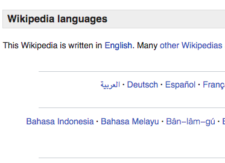
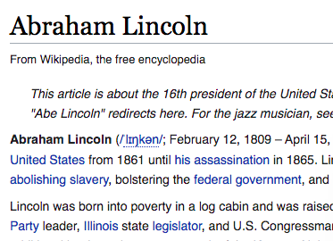
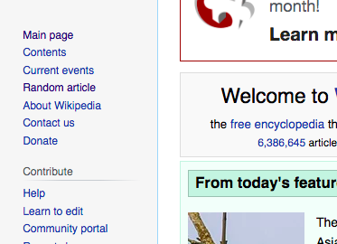
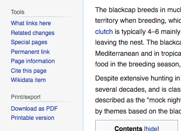

Usability Test
We assessed the usability of the Wikipedia website through five tests. The results from each task as well as final notes from the test can be found below.

Task 1
Change the language to Spanish

Results
Meng was successful, but it took her 43 seconds. She looked at the left bar, then up at the “talk” section, then she scrolled to the bottom of the page and found the language section. She was looking for “Spanish,” though, so she did not see “Español” at first.
Time: 43 seconds
Recommendation
There should be a language link on the top bar which would redirect to the bottom of the page.
Task 2
Find Abraham Lincoln's birthday

Results
Meng knew to go to the search bar and type in Abraham Lincoln’s name at once. The date under his picture (“In Office”) was confusing at first because she expected to see his birthday first. She found his birthday in the main section (first sentence) within 17 seconds.
Time: 17 seconds
Recommendation
The search bar is intuitive enough, although we learned in one of the readings that the search bar’s optimal width is 27 characters.
Task 3
Download an article as a PDF

Results
Meng initially used the command P function, but we wanted her to use the option embedded on the Wikipedia page. She knew to look in the left panel to find it.
Time: 22 seconds
Recommendation
With keyboard shortcuts available, we’re not sure that this function is necessary since the toolbar panel is already so cluttered.
Task 4
Load a random article

Results
Meng initially scrolled down and looked in the body of the page before looking towards the left side of the page and finding the tool to navigate to a random article.
Time: 27 seconds
Recommendation
It might help to declutter the left side of the page, although the random article link seems to belong on the left side.
Task 5
Use the cite this page tool

Results
Meng first looked at the reference section at the bottom of the article, then she looked in the left panel to find the cite option and found the button in 17.05 seconds.
Time: 17 seconds
Recommendation
It would make sense to include the “cite this page” option by the resource section of every page.
Final Info
Recall
Meng initially used the command P function, but we wanted her to use the option embedded on the Wikipedia page. She knew to look in the left panel to find it.
Emotional Response
The small, cramped font in the left panel was a bit frustrating for her, and the number of options were overwhelming. For basic searches, Wikipedia works well, but more advanced tasks were more complicated.